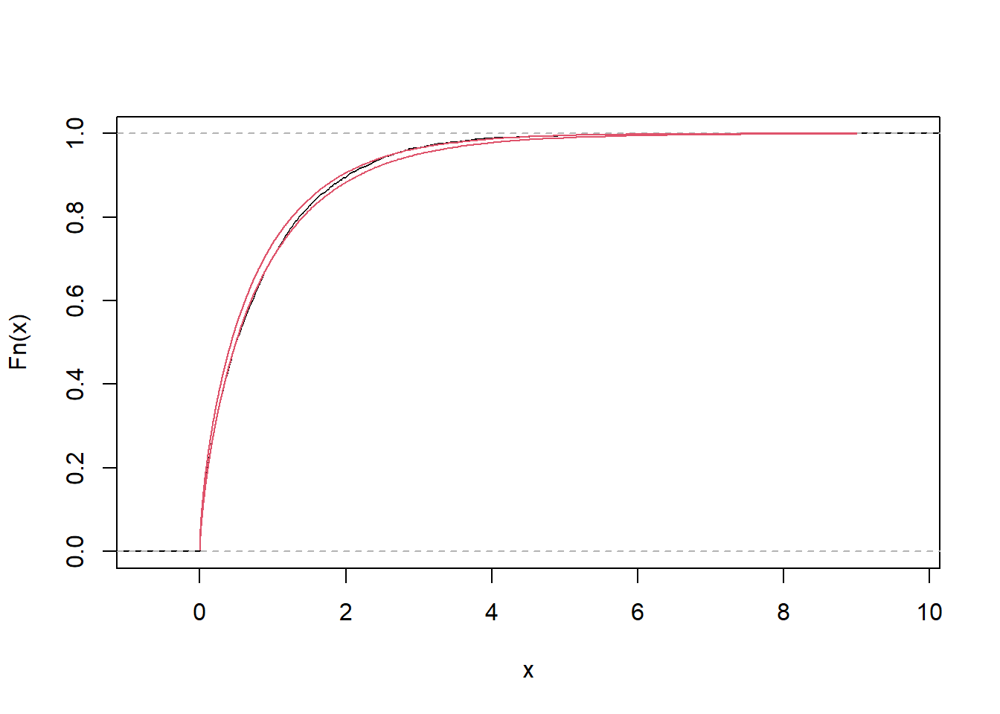

x [1] 0.2769550 1.1902521 1.1543901 0.6836040 1.2951363 0.8468467 0.7626888
[8] 0.3830976 0.2270072 0.2785412 0.3853067 0.4818242 0.2021683 0.8914625
[15] 0.7718524 0.9455476 0.8702839 0.5309044 1.2858882 1.0415047Assuma que \(\boldsymbol{\theta}\in\mathbb{R}^q\). Seja \(\ell(\boldsymbol{\theta})=\log L(\boldsymbol{\theta})\) a função log-verossimilhança e \(\hat{\boldsymbol{\theta}}\) a estimativa de máxima verossimilhaça para \(\boldsymbol{\theta}\). Considere a seguinte aproximação de \(\ell(\boldsymbol{\theta})\) em séries de Taylor
\[\ell(\boldsymbol{\theta})\approx \ell(\hat{\boldsymbol{\theta}})+\frac{1}{2}(\boldsymbol{\theta}-\hat{\boldsymbol{\theta}})'\mathcal{H}(\hat{\boldsymbol{\theta}})(\boldsymbol{\theta}-\hat{\boldsymbol{\theta}})\] onde \(\boldsymbol{\theta}\) é a matriz hessiana (de derivadas segunda) aplicada em \(\hat{\boldsymbol{\theta}}\). Deste modo, teremos que \[\pi(\boldsymbol{\theta}|\boldsymbol{x})\propto \exp\left\{-\frac{1}{2}(\boldsymbol{\theta}-\hat{\boldsymbol{\theta}})'\left[-\mathcal{H}(\hat{\boldsymbol{\theta}})\right](\boldsymbol{\theta}-\hat{\boldsymbol{\theta}})\right\}\pi(\boldsymbol{\theta})\]
Utilizando a priori imprópria \(\pi(\boldsymbol{\theta})\), temos que \(\boldsymbol{\theta}|\boldsymbol{x}\approx \hbox{Normal}(\hat{\boldsymbol{\theta}},-\mathcal{H}(\hat{\boldsymbol{\theta}})^{-1})\).
Note que as informações necessárias para a aproximação da posteriori acima podem ser obtidas via função optim.
Exemplo A amostra abaixo foi simulada do modelo Gama\((\alpha,\beta)\) (o valor dos parâmetros foram omitidos de propósito)
x [1] 0.2769550 1.1902521 1.1543901 0.6836040 1.2951363 0.8468467 0.7626888
[8] 0.3830976 0.2270072 0.2785412 0.3853067 0.4818242 0.2021683 0.8914625
[15] 0.7718524 0.9455476 0.8702839 0.5309044 1.2858882 1.0415047Como \(\alpha,\beta>0\), considere que \(\alpha=\exp\{\theta_1\}\) e \(\beta=\exp\{\theta_2\}\) (deste modo, \(\boldsymbol{\theta}\in\mathbb{R}^2\)).
A função de log-verossimilhança deste modelo é
logveross <- function(theta){ sum(dgamma(x, exp(theta[1]), exp(theta[2]), log = T))
}Podemos utilizar a função optim para obter as estimativas de máxima verossimilhança e a matriz hessiana. Contudo, primeiro devemos observar que esta função é um minimizador, logo, queremos que \(\boldsymbol{\theta}\) que minimize \(-\ell({\boldsymbol{\theta}})\).
opt <- optim( c(0,0), function(q) -logveross(q), hessian = T)
opt$par
[1] 1.245897 1.567152
$value
[1] 7.435047
$counts
function gradient
65 NA
$convergence
[1] 0
$message
NULL
$hessian
[,1] [,2]
[1,] 80.46195 -69.52104
[2,] -69.52104 69.52342No objeto opt, a lista par é o vetor com as estimativas de máxima verossimilhança, enquanto que hessian é o valor de \(-\mathcal{H}(\hat{\boldsymbol{\theta}})\).
A inversa de opt$hessian vai dar a matriz de covariância entre \(\theta_1\) e \(\theta_2\) a posteriori.
Sigma <- solve(opt$hessian)
Sigma [,1] [,2]
[1,] 0.09138023 0.09137711
[2,] 0.09137711 0.10575762Agora, podemos simular \(\theta_1\) e \(\theta_2\) a posteriori:
require(mvtnorm)Carregando pacotes exigidos: mvtnormtheta_sim <- rmvnorm(500, opt$par, Sigma)Por último, podemos fazer inferências sobre \(\alpha=\exp\{\theta_1\}\) e \(\beta=\exp\{\theta_2\}\):
# intervalos de credibilidade para alfa
quantile(exp(theta_sim[,1]), c(.025,.975)) 2.5% 97.5%
1.978850 6.350455 # intervalos de credibilidade para beta
quantile(exp(theta_sim[,2]), c(.025,.975)) 2.5% 97.5%
2.582863 8.865732 A diferença entre o algoritmo Metropolis e o Metropolis-Hastings está na escolha da distribuição proposta. No primeiro, a proposta é simétrica, \[g(x|y)=g(y|x).\] Com isso, teremos que \[\frac{f(x)}{f(y)}\frac{g(y|x)}{g(x|y)}=\frac{f(x)}{f(y)}\] e a probabilidade de aceitação da cadeia é baseada somente na distribuição alvo \(f\).
No algoritmo Metropolis, é comum escolher a distribuição proposta como sendo uma normal. Uma escolha razoável é utilizar como proposta aproximação normal vista na seção anterior.
Exemplo Consideremos novamente a amostra do exemplo anterior. A função de verossimilhança é \[L(\theta)=\prod_{i=1}^n \frac{\beta(\theta_2)^{\alpha(\theta_1)}}{\Gamma(\alpha(\theta_1))} x_i^{\alpha(\theta_1)-1}e^{-\beta(\theta_2)x_i}\] onde \(\alpha(\theta_1)=e^{\theta_1}\), \(\beta(\theta_2)=e^{\theta_2}\). Além disso ,considere ad prioris independentes \(\theta_i\sim\hbox{Normal}(0,100)\). Então, devemos simular do modelo
\[\pi(\theta|\boldsymbol{x})\propto \left[\frac{\beta(\theta_2)^{\alpha(\theta_1)}}{\Gamma(\alpha(\theta_1))}\right]^n \left[\prod_{i=1}^n x_i\right]^{\alpha(\theta_1)}e^{-\beta(\theta_2)\sum_{i=1}^{n}x_i}e^{-\frac{1}{200}(\theta_1^2 + \theta_2^2)}\]
A posteriori aproximada, que encontramos no exemplo anterior é \[\boldsymbol{\theta}|\boldsymbol{x}\approx N \left[ \left(\begin{array}{c}1,24\\1,56 \end{array}\right),\left(\begin{array}{cc}0,09 & 0,09\\0,09 &0,11\end{array}\right)\right]\]
Vamos aproveitar a estrutura de covariâncias acima para usar a proposta
\[\boldsymbol{\theta}^*|\boldsymbol{x}\sim N \left[ \boldsymbol{\theta}^{(j-1)},\tau\left(\begin{array}{cc}0,09 & 0,09\\0,09 &0,11\end{array}\right)\right]\] onde \(\boldsymbol{\theta}^*\) é o candidato gerado e \(\boldsymbol{\theta}^{(j)}\) é o estado atual da cadeia e \(\tau\) é o tunning da cadeia.
B <- 10000 # número de iterações
theta <- array(NA_real_, c(B,2))
theta[1,] <- opt$par # valor inicial da cadeia é a emv
tau <- 1 # tunning
cont <- 0 # contador de aceites
for(j in 2:B){
#simule um candidato
theta_cand <- rmvnorm(1, theta[j-1,], tau*Sigma)
# calcule a probabilidade do salto
lnum <- logveross(theta_cand) +
sum(dnorm(theta_cand[1,],0,10, log = T))
lden <- logveross(theta[j-1,]) +
sum(dnorm(theta[j-1,],0,10, log = T))
prob <- exp( lnum - lden)
# verifique o salto
u <- runif(1)
if( u < prob){
theta[j, ] <- theta_cand
cont <- cont+1
} else {
theta[j,] <- theta[j-1,]
}
}
cont/B[1] 0.5628theta_sim <- theta[ seq(B/2, B, 15),]
acf(theta_sim)
Por fim, as estimativas intervalares para \((\alpha,\beta)\) são
quantile(exp(theta_sim[,1]), c(.025,.975)) 2.5% 97.5%
1.699256 5.644593 # intervalos de credibilidade para beta
quantile(exp(theta_sim[,2]), c(.025,.975)) 2.5% 97.5%
2.087772 7.675778